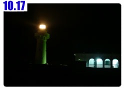
晚上睡的比較早，畢竟感冒在身，早一點睡覺把病魔趕跑。
大概是因為睡覺吹電風扇又沒有蓋被子的緣故才會感冒吧，所以晚上的時候就關掉電風扇，拿乾淨的四角褲蓋在頭上睡，這樣頭就不會著涼。
睡醒之後果然感冒好很多，但是一不小心就睡過頭了，出發的時候都已經拖過了早上九點。
今天的目標是鵝鸞鼻燈塔，說遠不遠說近不近，比起距離，更令人傷腦筋的是路線的選擇。
從旗山往鵝鸞鼻的路實在太多條可以騎了，聽過柯老師的建議之後，選擇走『沿山公路』。
跟濱海公路一樣，是非常白話的名字，就是沿著中央山脈往南的公路，只是一條省道而已，但是路面素質優良，車流量又少，又可以避開市區。
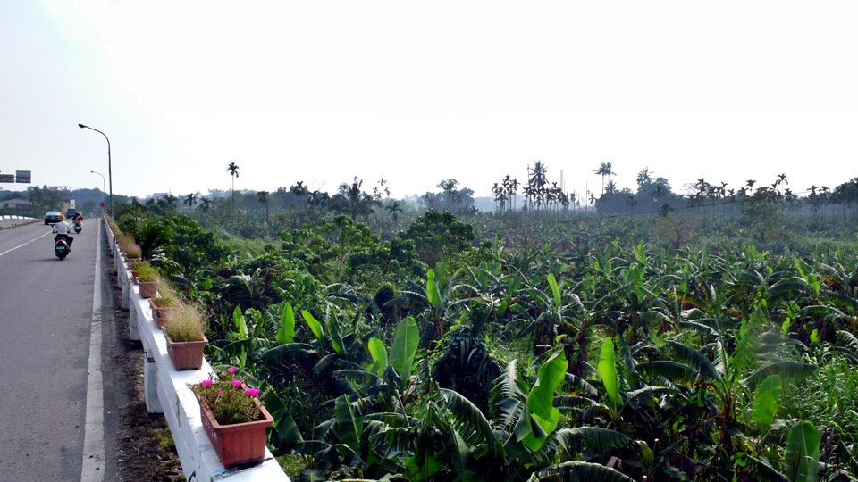
旗山不虧是香蕉王國，這邊都是蕉田呢，騎車在這裡彷彿就可以聞到香蕉的味道，昨天買了沒吃完的香蕉整串帶著走，
這一路上都可以吃香蕉預防抽筋，沒有東西吃又肚子餓的時候也可以吃香蕉，同時它的熱量也很高，就不用老是吃巧克力那麼膩。
這個就是旗山，形狀看起來有像古代的戳旗嗎？
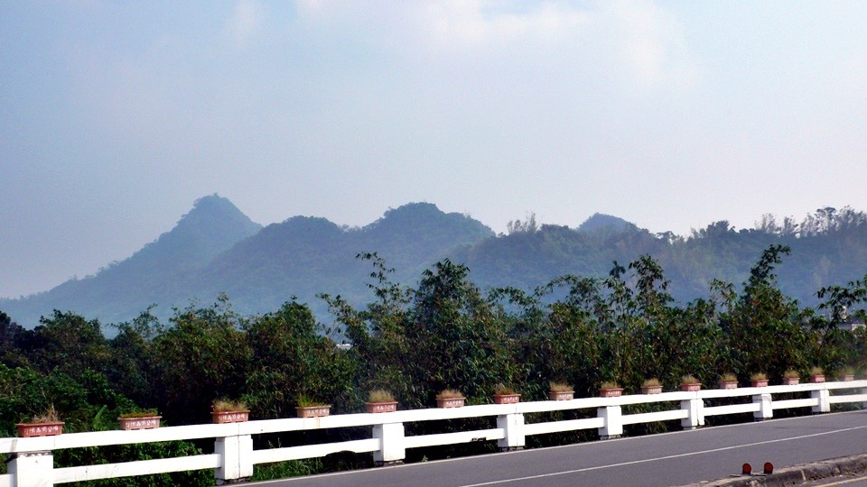
至少我覺得蠻像老街地上的圖案畫的山勢線條。
這個花呀，小時後有在鄉下長大的都知道，它可以吃耶！
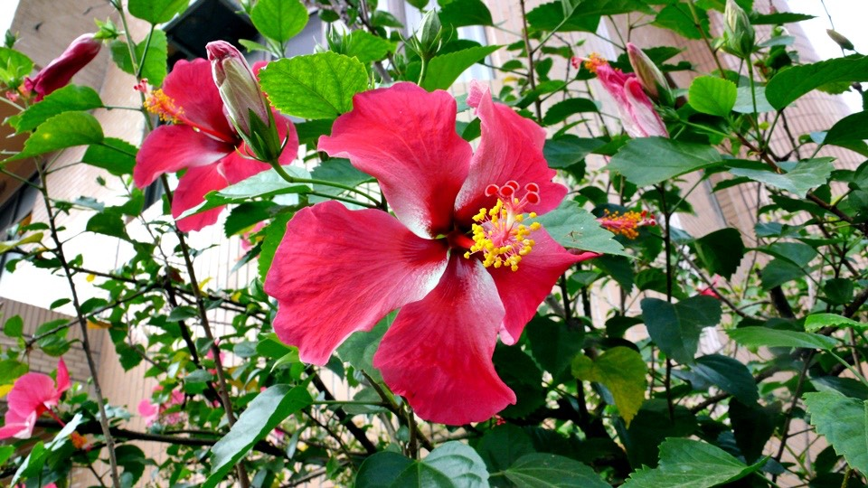
把花拔下來，抽出中間的花蕊，就可以吸甜甜的花蜜，話說小時候我吃了好幾百朵這個花，到今天還不知道它叫什麼名字？
農作物有分等級，比較普通的就沒有任何防護，中等的就會用塑膠袋或是紙袋把農產品包起來，高級一點的就整座田都搭起蚊帳。
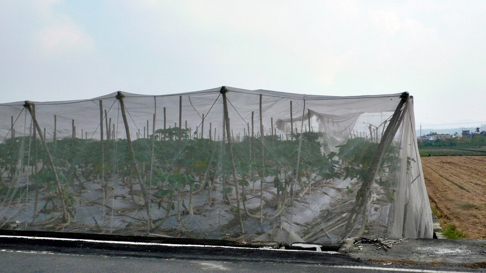
這樣就不用怕鳥或是蚊蟲來偷吃農產品，真好奇裡面種的是什麼？
還不到沿山公路之前要過一條很大的河，又大又寬，河水不多，但是被鵝卵石河床給分成好幾條支流。
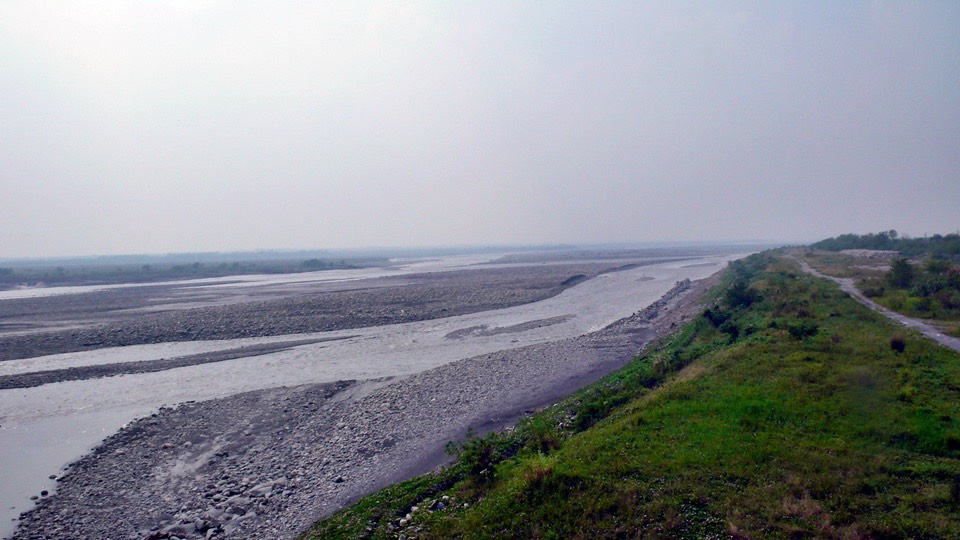
通過這條河域的就是一條一樣是很長很長的橋樑～過了這邊就算是沿山公路的開始了。
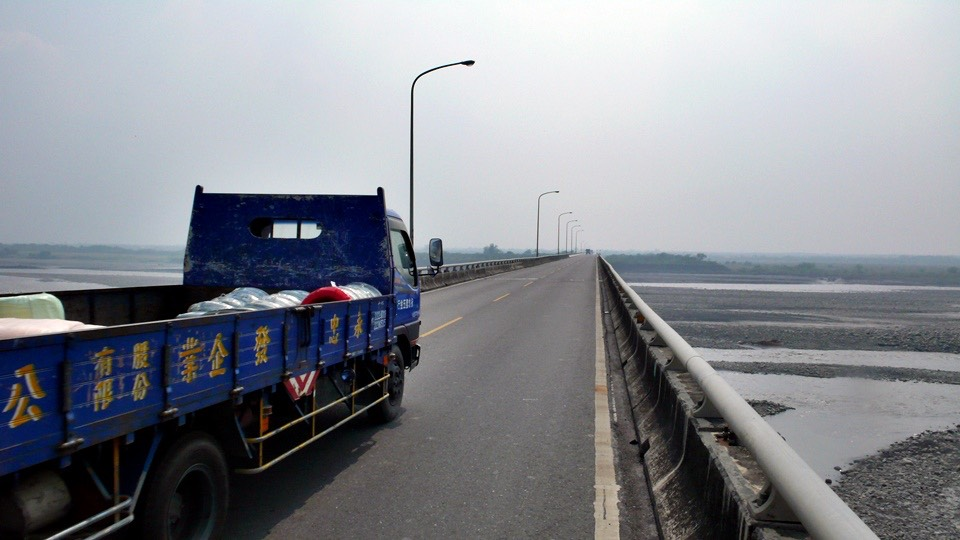
上次在嘉義我教錯了小朋友，我大喇喇的說『鳳梨跟蘿蔔一樣是長在土裡。』
這個是錯誤的喔！小朋友趕緊把這個錯誤的知識從腦海中修正過來，不然長大說出口會被人笑。
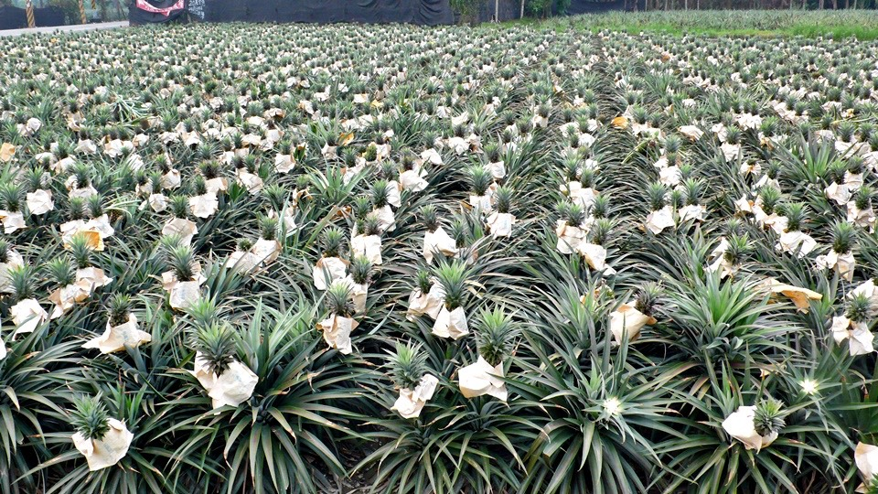
那些真的是鳳梨田沒錯，但不要看到鳳梨葉長在外頭就以為鳳梨埋在土裡，其實鳳梨是長的像上面這樣的。
上次那一個鳳梨田已經被採收完畢所以只剩下葉子，現在這一畝田看了就很清楚啦～
經過一個地方叫做泰山，這個地名真是一個地攤名，全台灣有多少地方叫做泰山呀？
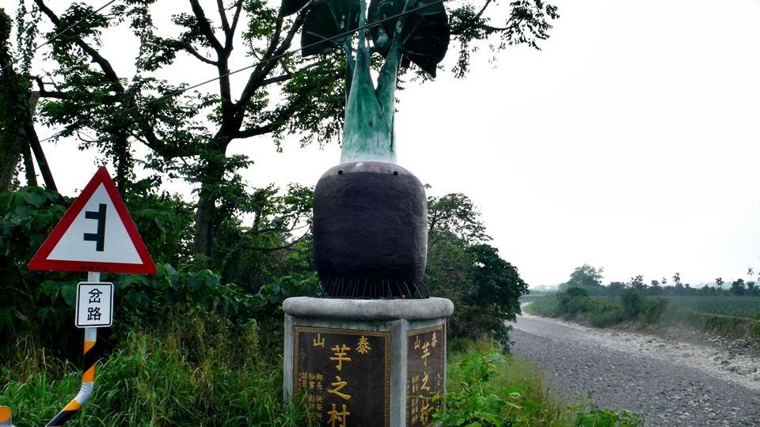
這邊的泰山說自己是芋之村，的確騎進去之後看見的農作物都是芋頭，可惜沒有看到對應的食物可以吃，要是這裡有賣芋頭冰就好了。
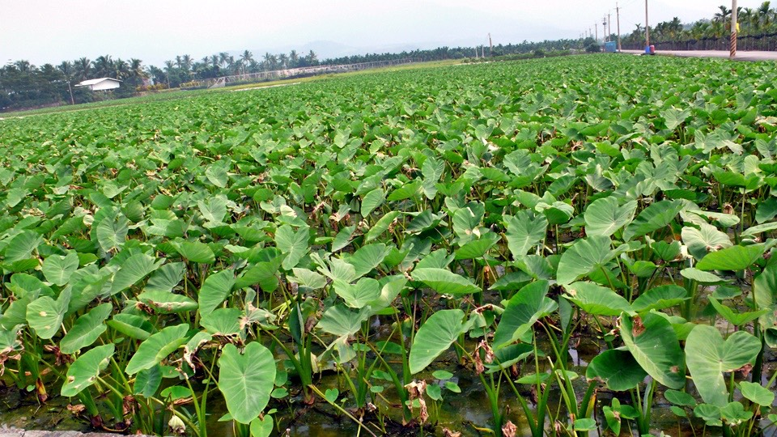
騎著騎著就經過了墓地，要是晚上騎到這邊一定很恐怖，黑鴉鴉的又沒路燈照明，自己嚇自己都可以嚇出一身冷汗。
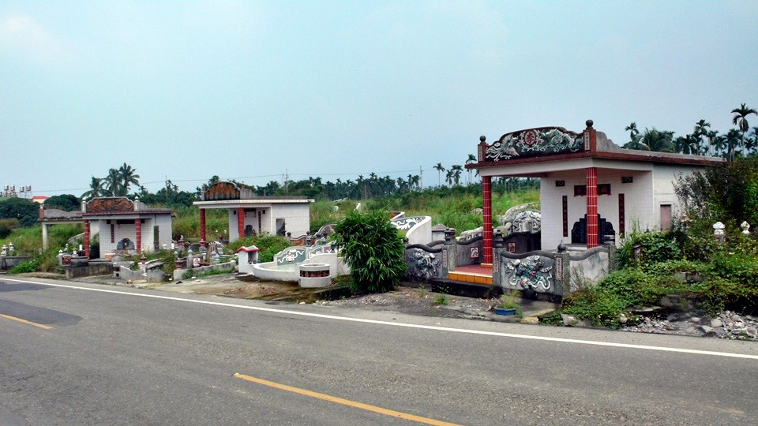
不過雖然這樣說，我還是一直在想要不要哪一天晚上沒地方睡的時候，就找個墓地借住一晚，找一個看起來豪華一點的，應該跟住旅館差不多吧？
騎在沿山公路很安靜，車流超級少，除了蟲鳴鳥叫之外沒什麼噪音，空氣也非常的好。選擇這條路真是再正確不過了。
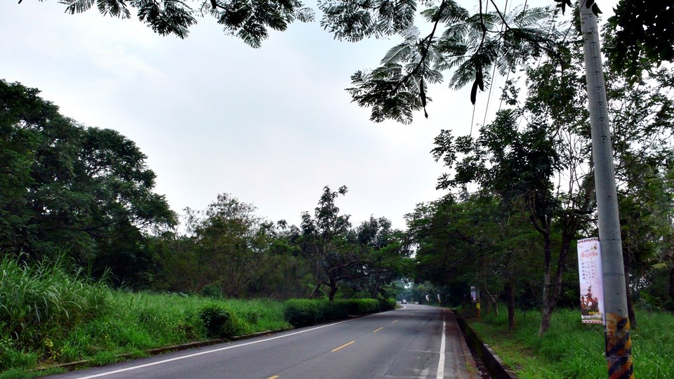
名符其實的沿山公路，中央山脈在左手邊，隨時轉頭就可以看到山，但是又不用爬山，這一段路還算平坦，騎起來很有效率。
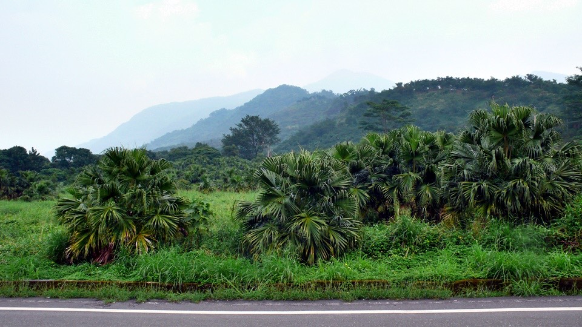
一路上過了好幾條河，看起來都差不多的樣子，就是渾濁的河水配上小石頭的河床，像國外那樣的大河台灣比較少見呢。
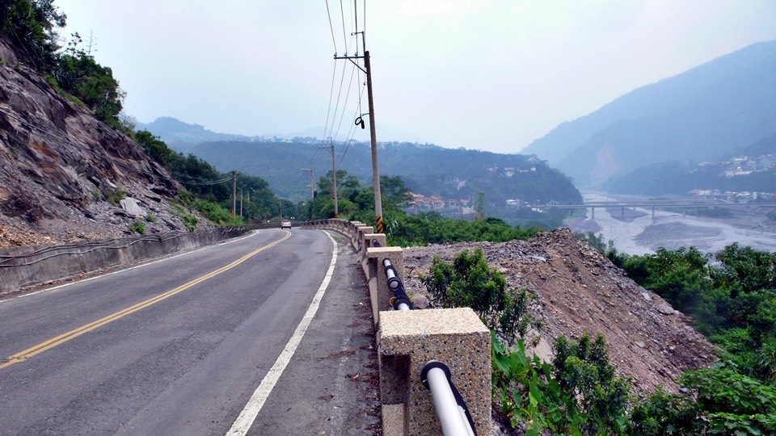
是不是因為水都被堵在上流變成水庫，所以下游的水才會那麼稀少呢？
沿山公路騎到三地門之後突然就變成要入山証才可以繼續往前騎，真是奇怪，明明這段路就不怎麼需要爬山呀，更何況是要入山証？
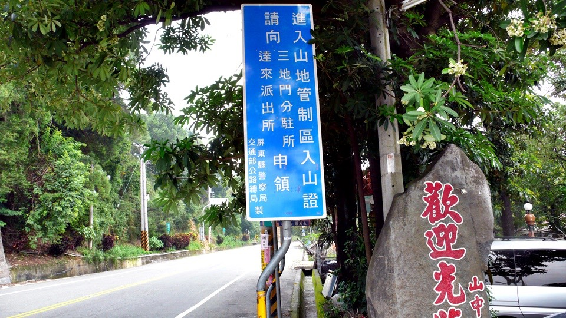
果然是自己騎錯路了，這裡常常會有兩條路共用同一線道的規劃，然後騎著騎著又分段成兩條路，一不留神就會騎往奇怪的地方。
還好入口處有掛這個牌子，不然大概五個小時之後我才會開始懷疑，為什麼還沒到墾丁？結果已經在深山裡跟猴子作伴。
三地門入口處的塑像，做的很漂亮。
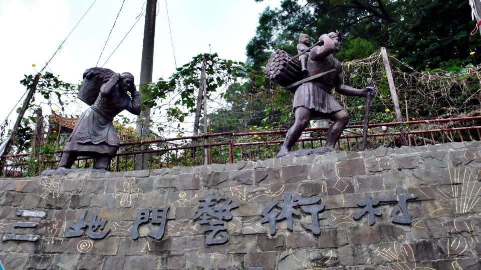
這邊接著一路往南然後從台東、花蓮騎回台北，都可以感受到原住民的氣息，親切跟好客，還有檳榔跟米酒 :D
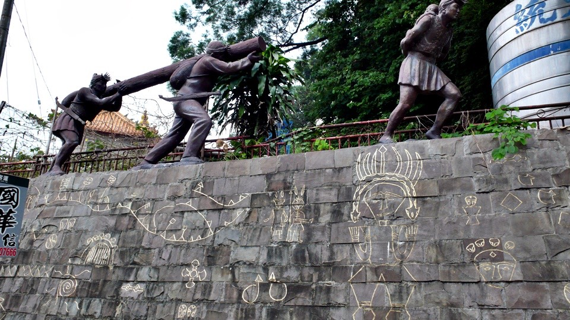
騎在陌生的道路，看著有趣的地名也是一種樂趣，居然有個地方叫繁華耶？
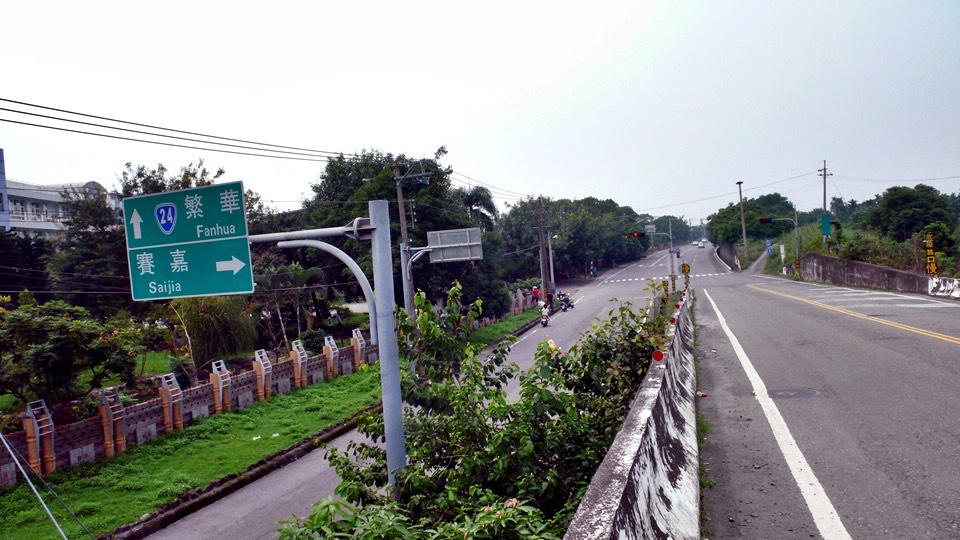
這還不算什麼，居然也有地方叫做賽嘉耶！要是反過來唸的話就變成....咳...
好綠的隧道，到目前為止都是零星的幾個小隧道，最多也是最頻繁的部分就是花蓮往宜蘭那一段的山路。
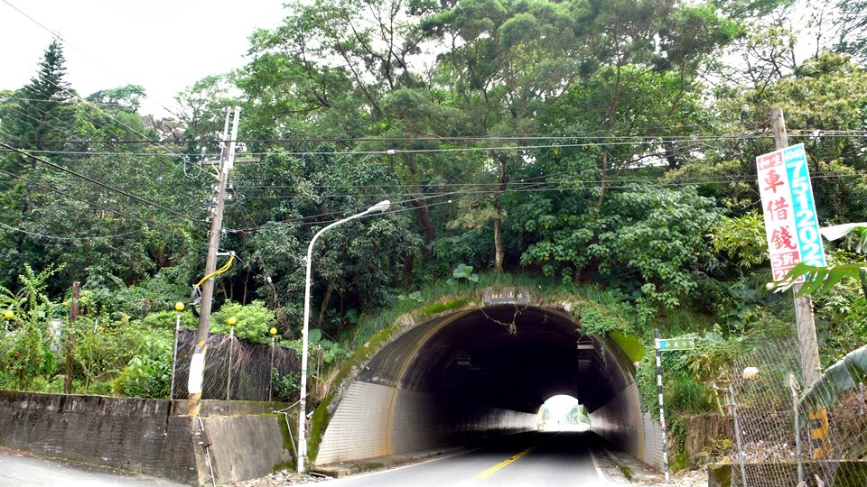
還是小隻的時候都長的黃澄澄一個模樣，難怪我分不清楚小雞跟小鴨，長大之後就很好認啦～可愛又好吃的小鴨子們～大家好～
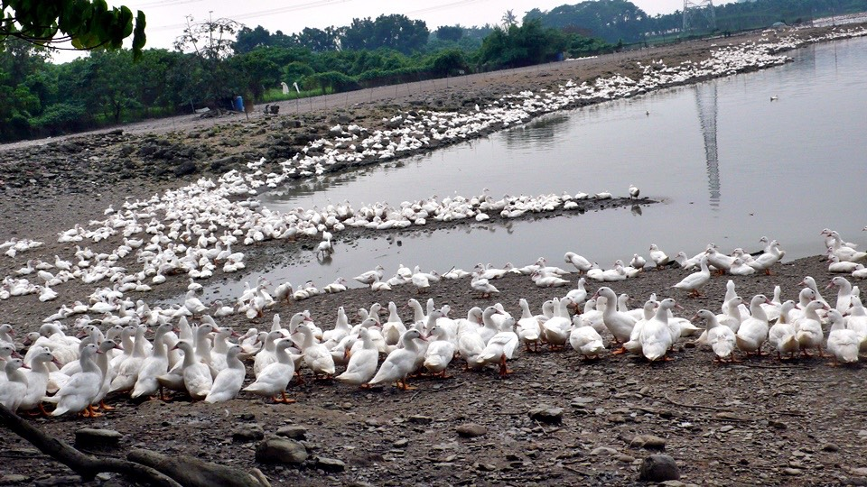
今天～你要吃哪一隻呢？
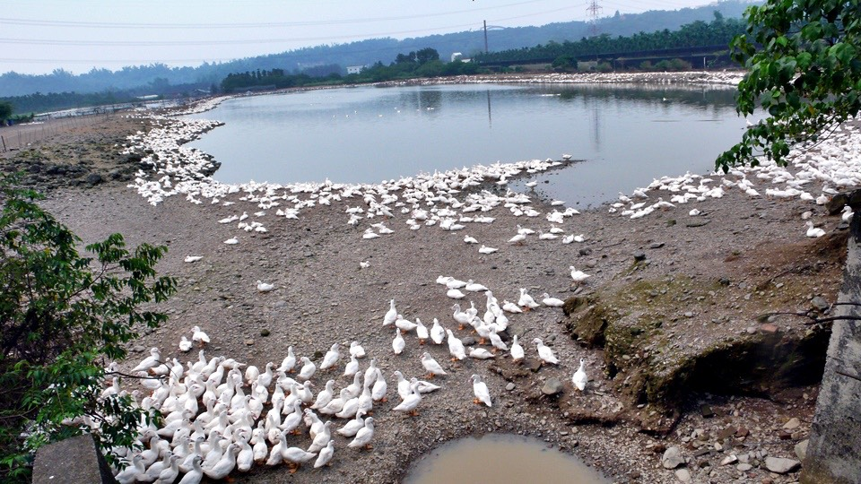
還有正港的台灣牛，黃牛很可愛，可以幫忙犁田，而且又聽話，可惜被發現很好吃之後，就不停的被宰來吃。
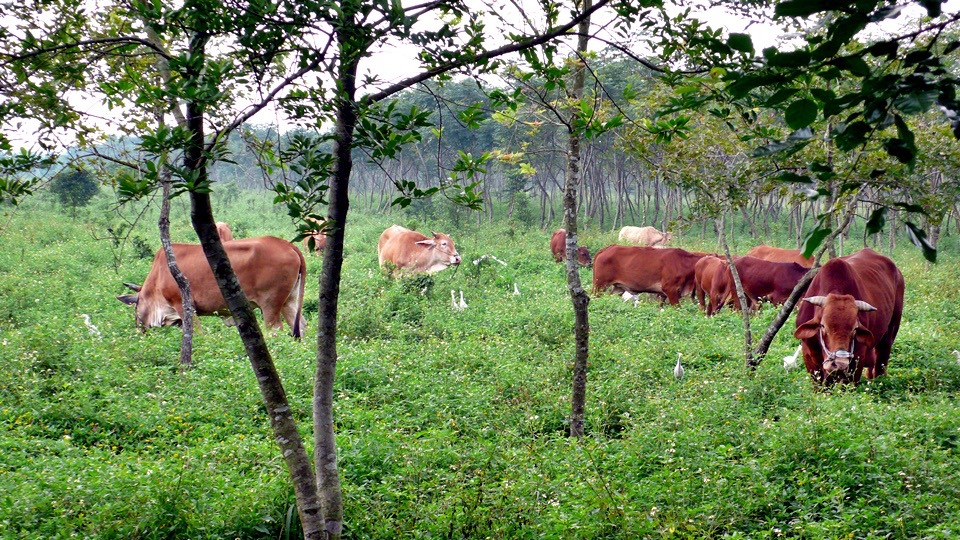
話說古早的農家跟牛的感情都很好，等牛老了要拿去賣的時候都會很捨不得，牛也會難過的流眼淚。
所以老一輩的種田人才不吃牛肉，只是現在都是機械農業，要看到耕田的牛已經很罕見了，這些都已經變成完全的肉牛。
某個林蔭隧道，在我的正後方，莫名其妙的居然是一個軍事基地，看到有阿兵哥站崗才發現，不時也有軍用卡車進出。
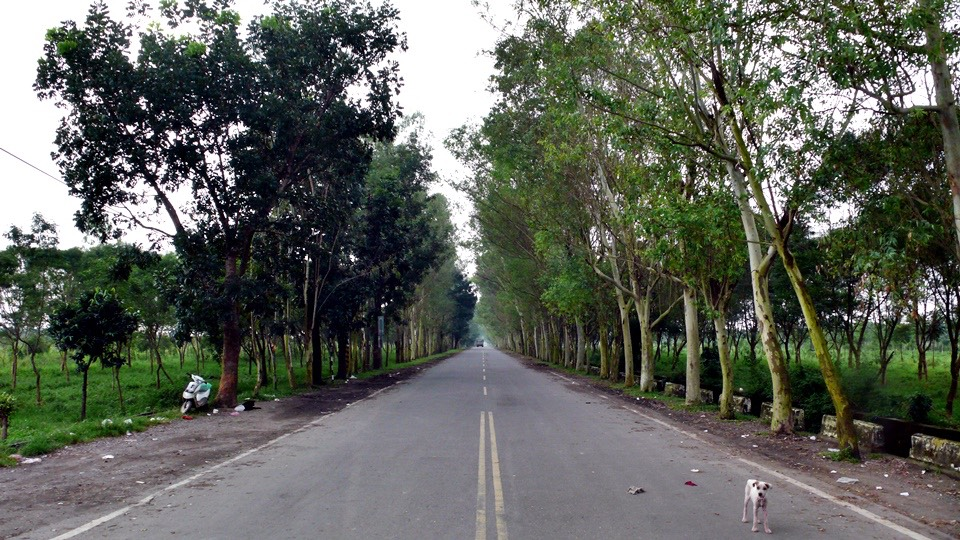
要是我轉身一百八十度拍照的話，說不定會被請去裡面喝咖啡。
這一路上不停的在樹上看見這個黃色的東西，看那形狀一開始我以為是小燈，所以不以為意。
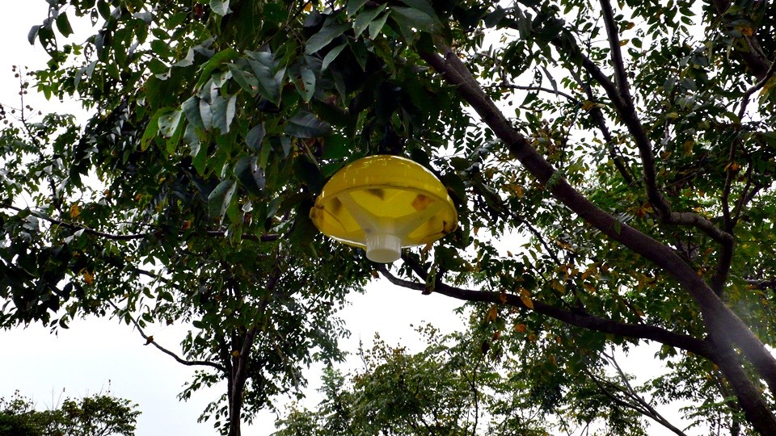
可是越看越奇怪，如果是燈的話，那怎麼沒有電線呢？而且數量也未免太多了吧？
所以這究竟是什麼呢？毒殺害蟲的裝置嗎？
又是鴨子，數量更多了，姿勢也都很好笑，還有趴在地上脖子伸的長長的鴨子。
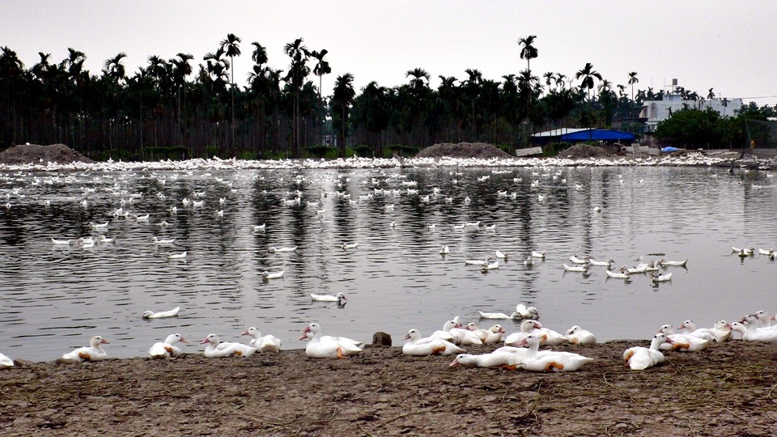
雖然照片拍不到味道，但是有經過這些養鴨場的人就知道，這邊飄散的空氣絕對不會好聞~_~
廢棄的電動玩具墳場，自從國中那時候，電動玩具跟賭博性電玩被畫上等號之後，台灣的電動玩具場幾乎消失。
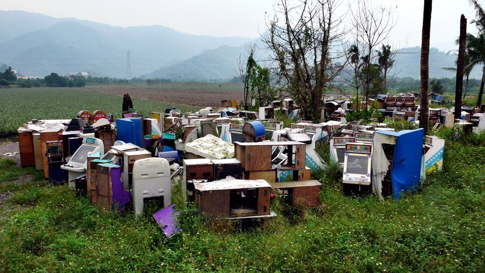
結果唯一保留下來的，居然是當時要查禁的賭博性電玩，當時下達這個查禁法令的台北市長，我一直討厭他到現在。
沿著山騎車，久了還真的有點悶，偏偏這段路又很長，騎到屏東靠海的地方大概要騎上將近一百公里。
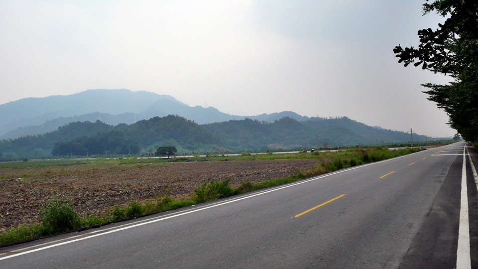
景色變化越來越小，新奇的東西看了幾次之後就變得不再有趣，還好昨天睡的飽飽的，不然又要打瞌睡了。
往前往後看都是山，已經好幾天都是霧濛濛的天氣，有點距離的山根本快要看不見，整體來說很像山水畫的感覺。
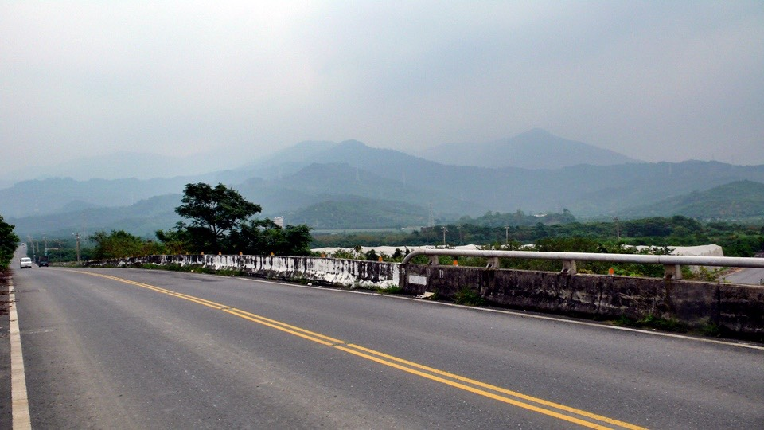
可愛的橋樑，上面用瓷磚貼著顏色漂亮的壁畫，熱一點沒關係，還是如壁畫中間的太陽一樣維持晴天吧。
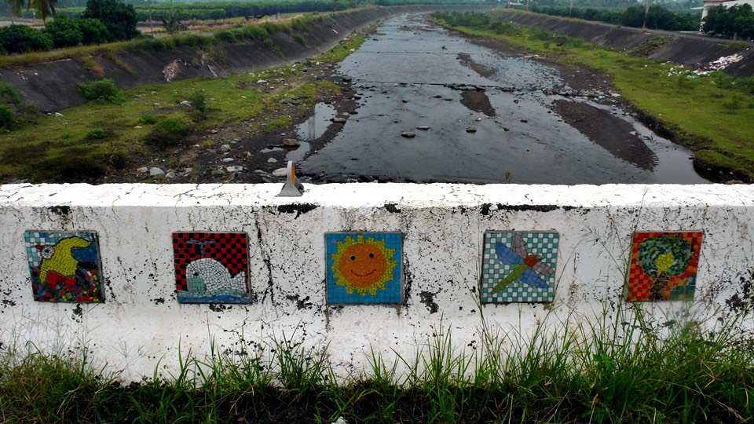
因為這時候又開始飄起了小雨，難道是因為海邊快到了嗎？
從西濱之後就躲進山裡，距離看到海已經是好幾天前的事情，這幾天都在看著山～山～還是山，想換點口味啦。
沿山公路又稱為185省道，騎到最末段的時候就變成通往恆春跟墾丁的替代路線，大概是想把車流從高雄那邊分散到這裡來。
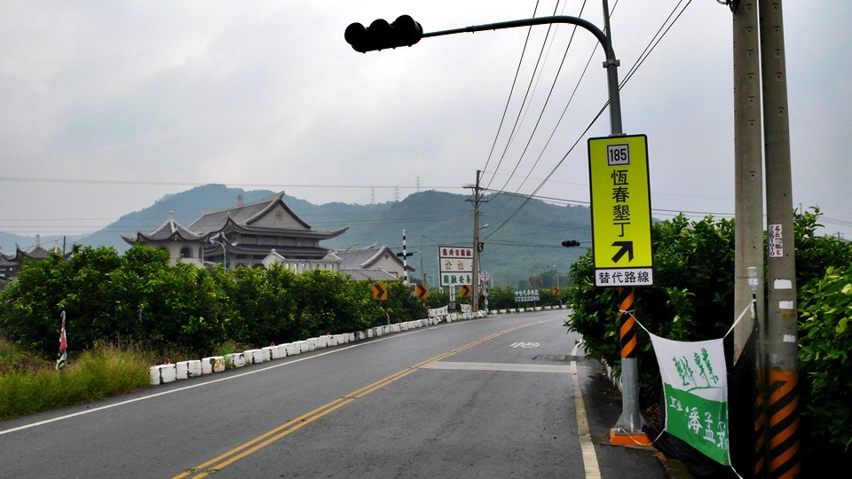
可惜效用不是很大，大家還是選擇走台一線，這邊的車永遠都是小貓兩三隻。
這個紅綠燈，就是185省道的盡頭，外面就是超大條的台一線，路上有一堆遊覽車在跑，主要都是從高雄開往墾丁。
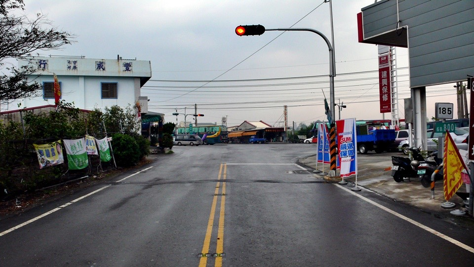
騎到這邊里程已經破百，距離墾丁還有52公里，而且我還要騎到鵝鸞鼻，所以比這個還要再遠一點。
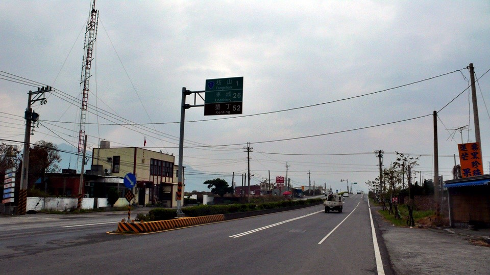
估計一下時間，天黑之前一定到不了，大概要晚上七～八點才有辦法到，所以要做好摸黑騎車的心理準備。
騎過這裡的時候，被免費無線上網的招牌給吸引住，難道我是一個頭腦這麼簡單，容易被誘惑的人嗎？
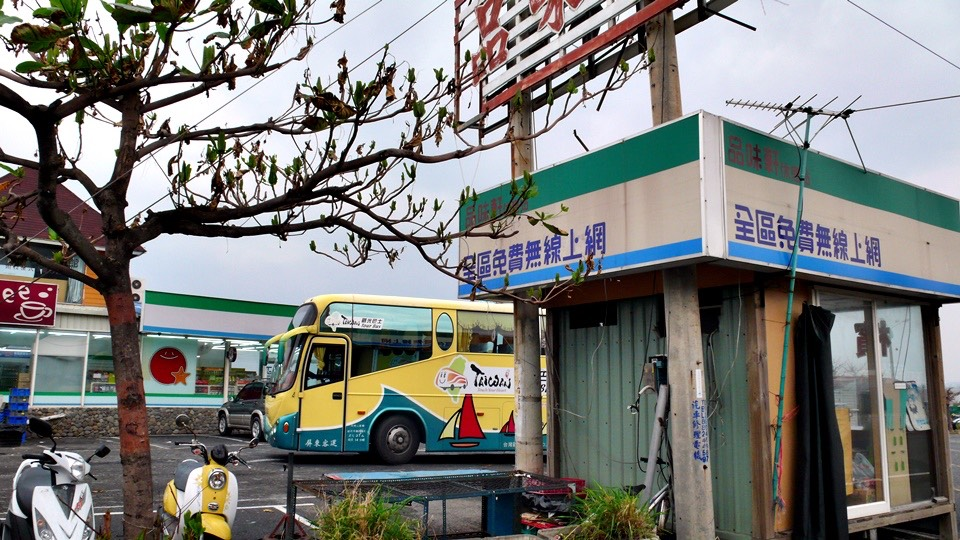
還好經過這裡的時候，遊記連一篇都還沒寫，上網也不知道要幹麻，所以加速離去，趁著天色還亮趕緊往南騎。
一提到墾丁，那就是海邊加上椰子樹，睽違已久的海邊又出現啦，最後一次看到的時候是巴士海峽，現在已經變成太平洋。
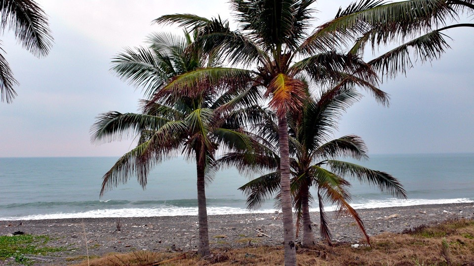
這一條就是台一線，旁邊有很大很寬的路肩可以讓自行車騎，偶爾會有機車通行，但不礙事。
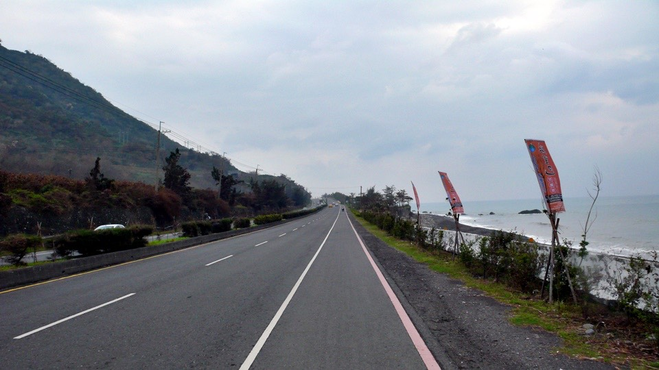
右邊是一望無際的大海，從現在開始一路往台北騎，都會保持右邊是海、左邊是山的情形。
可惜天色不是很漂亮，連帶的海水的顏色也顯得陰沉。
偶爾厚厚的雲層裂開隙縫，才看得見陽光灑落在海面上。
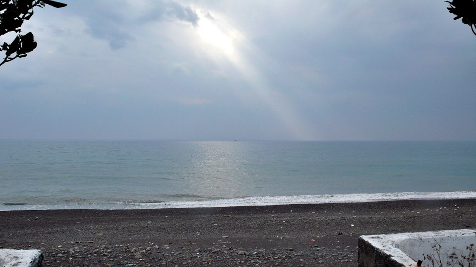
靠海的地方養殖的漁塭超級多的，完全取代了農田，這裡就是轉個不停的打氣馬達，裡頭養的不知道是什麼魚種。
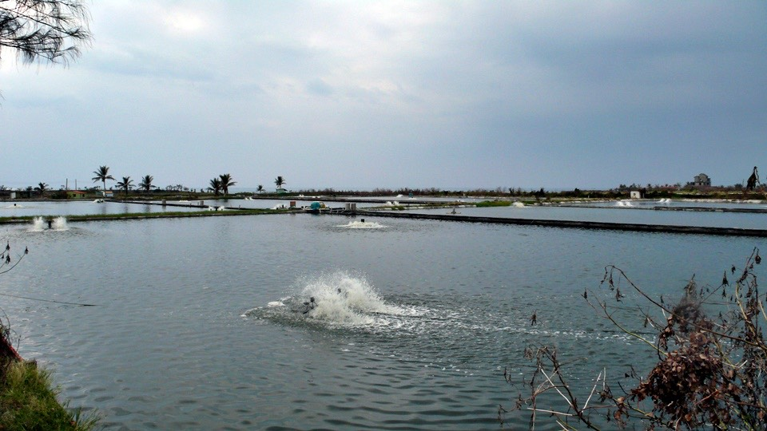
海馬排排站，一不小心拍太多照片，講解太麻煩了，不過這也沒什麼好特別講解的。
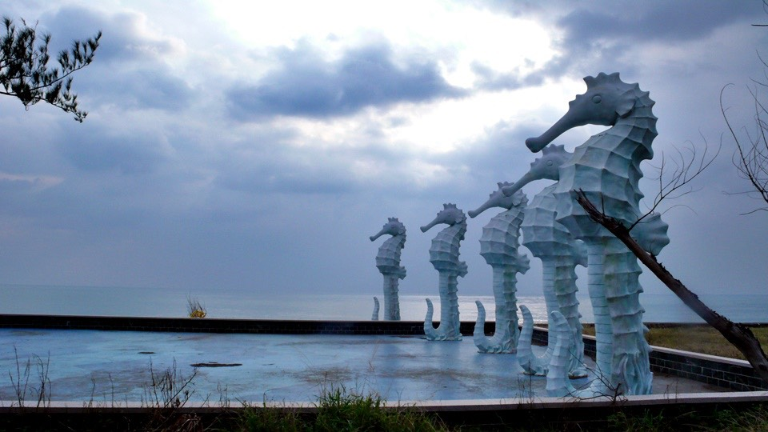
騎一騎回頭一看，已經漸漸的深入恆春半島，台灣南端的旅遊聖地，今天是星期三，不是假日，人潮一定少很多，可以清閒的通過。
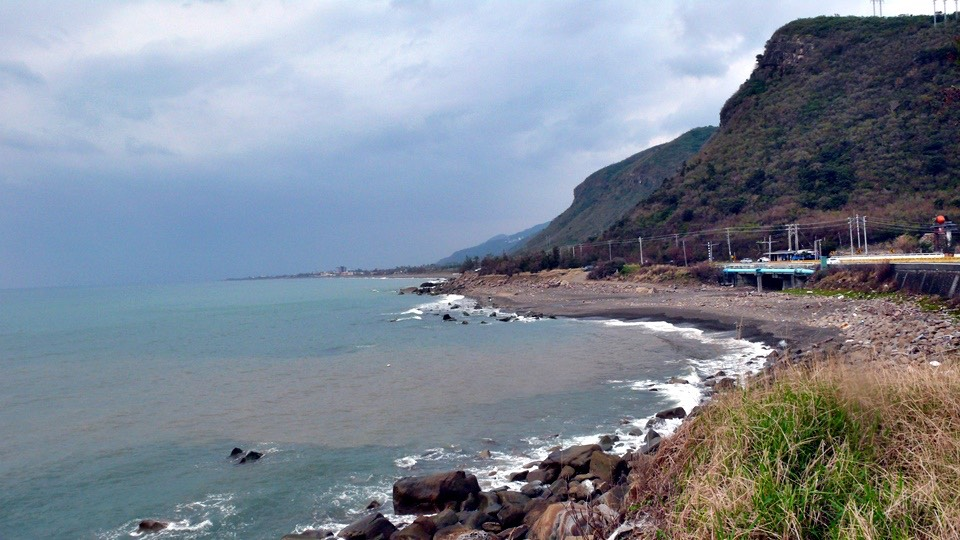
路旁就是海邊，距離近的時候不到幾公尺，騎過去欣賞一下美麗的海景。
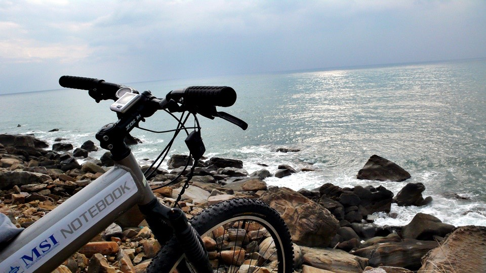
看了那麼多天的山，現在看到海，就覺得特別的有生命力，海浪一波波的打在岸上，好像是活的、有生命的一樣。
相較之下山就顯得太安靜木訥了一點，但是騎乘在山野中又能感受到平靜的滋味，重點是，爬坡之後的下坡滑的很爽。
可是整體來說，我比較喜歡海邊，因為可以看見穿比基尼泳裝的辣妹。
肚子餓啦～～！今天幾乎都在吃香蕉，一整串的香蕉已經吃的剩下兩根，因為沒經過台中市、台南市跟高雄市，所以漏吃了很多當地美食。
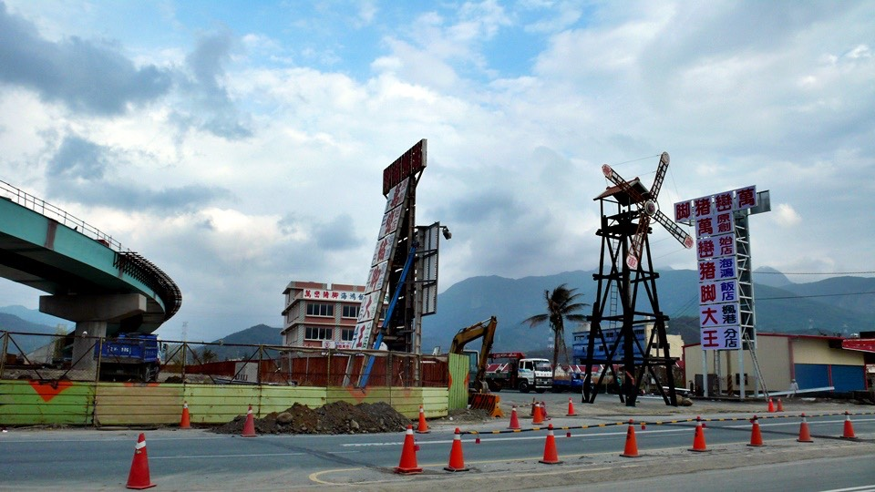
好加在經過旗山的時候努力吃了很多，這次經過屏東就不能再錯過萬巒豬腳了。
本來只想點個豬腳飯之類的簡餐，但是沒有這種東西，最小份的豬腳一盤也要兩百元，而且一點也不小盤，切起來份量超多。
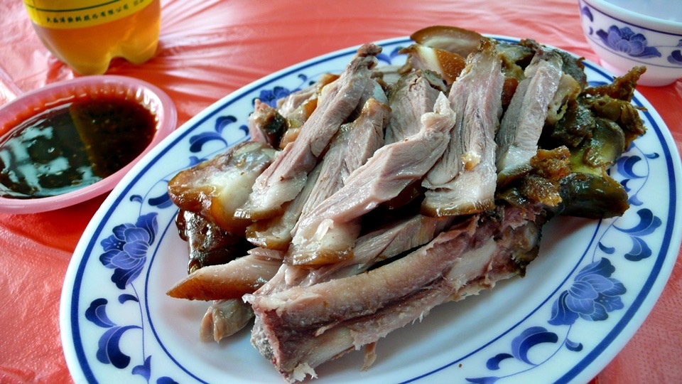
對不起了，吃不到的各位，請讓我代替你們享用這個美味的佳餚。
價錢不是問題，份量也不是問題，好吃最重要，省下那麼多住宿費，餐餐都吃好料也划的來。
這盤豬腳我沒可能吃不完，只是光吃豬腳有點太乏味，所以又點了一盤炒飯。
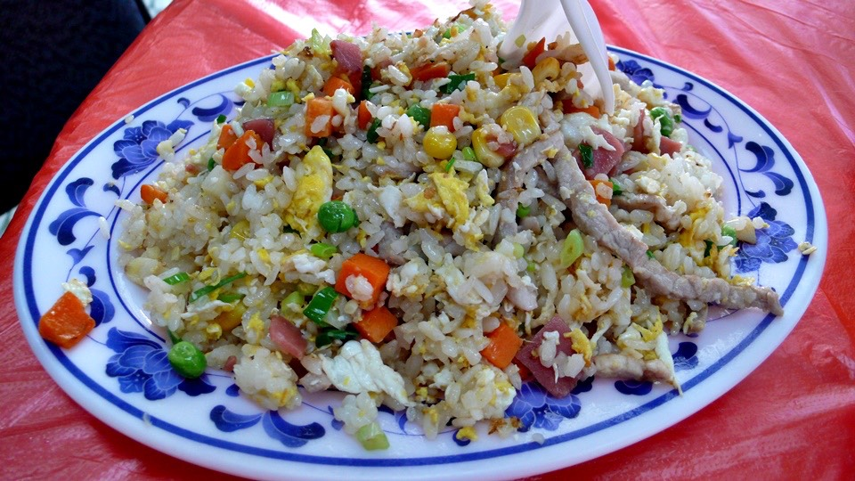
可惜只有我一個人來吃，不然還真想多點一些別的什麼。
雖然天色快要黑了，但是經過萬巒豬腳的時候還是停車進去用餐，反正遲早都要摸黑騎車，吃飽肚子比餓著肚子騎車還要幸福一萬倍。
這個路口很有名，騎到這邊就算抵達楓港了，四年前在這邊爆過胎，四年後平安通過這邊。
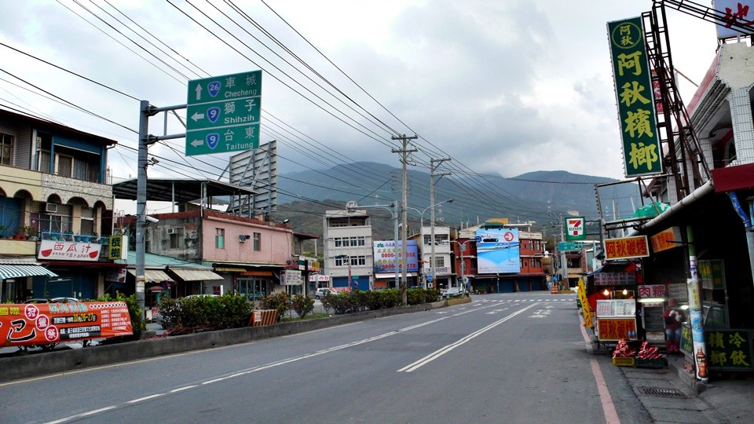
為什麼說這個路口很有名呢？從這邊左轉就是台九線，這一段往台東的路就是南迴公路，但是這次沒有要從這邊繞過台灣，
而是要騎到鵝鸞鼻，從台灣的最南端轉一圈，一路走旭海的方向，然後再騎到台東去，所以在這邊先跟南迴說掰掰。
看到『烤鳥魷魚』就知道楓港到了，每一家都在賣這個喔。

如果不是賣這個的，那大概就是賣洋蔥，洋蔥也是楓港的特產。
天色開始黑了，雲層厚到看不見夕陽，那個黃黃的亮光就是今天最後的太陽蹤影，比預料中還要快天黑，風勢也轉變成逆風。
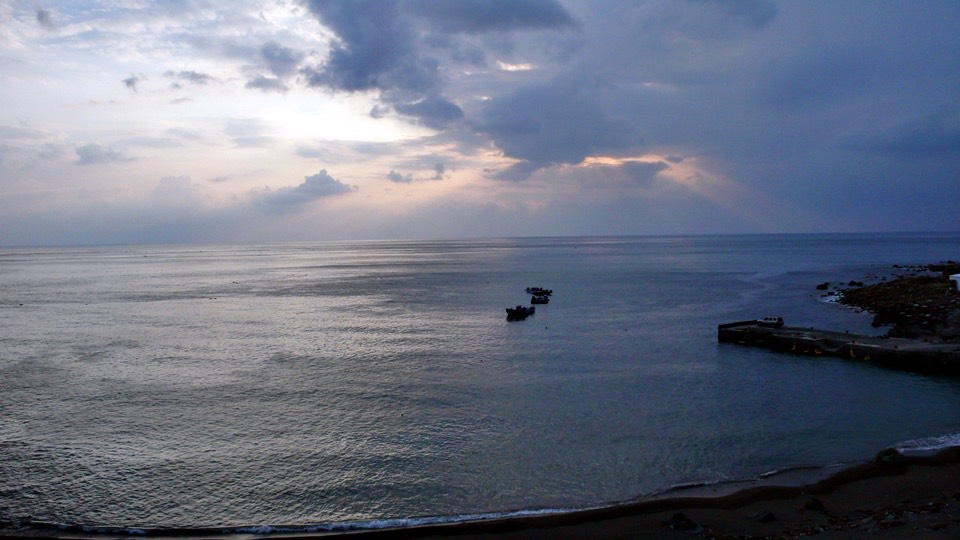
冬天逆時鐘環島的缺點浮現了，後半段路線從南部往台東、花蓮、宜蘭這段路，都要飽受東北季風的摧殘。
一路在強勁的逆風中騎車，肯定苦不堪言，而且還要加上爬坡，就算不爬坡的時候，騎在平坦的海岸線公路上也可以被逆風整的慘兮兮。
好尖的山頭
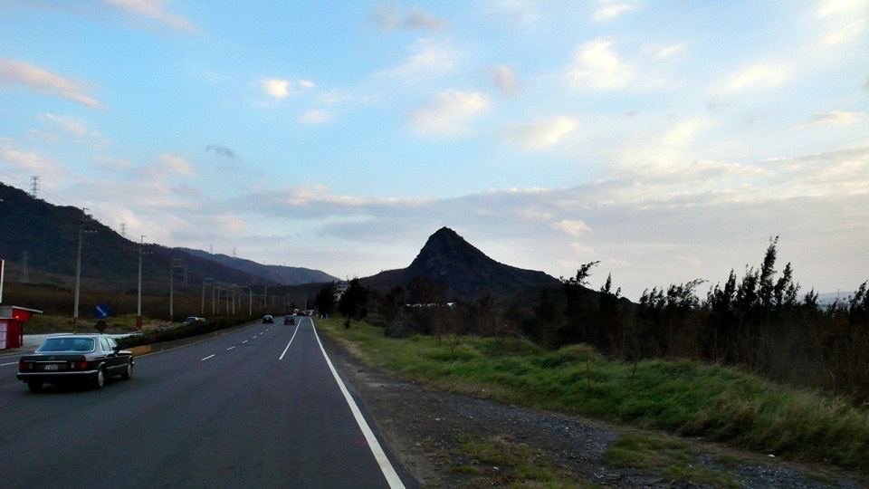
歐耶～終於騎到恆春半島了！
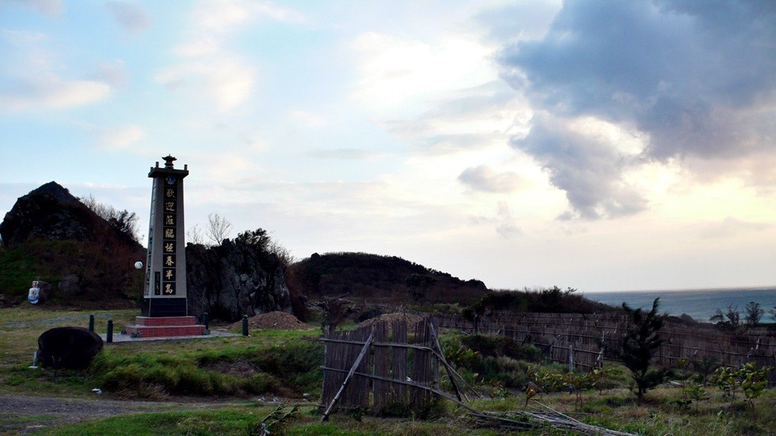
這就是那個好尖的山的真面目，原來是石頭山。
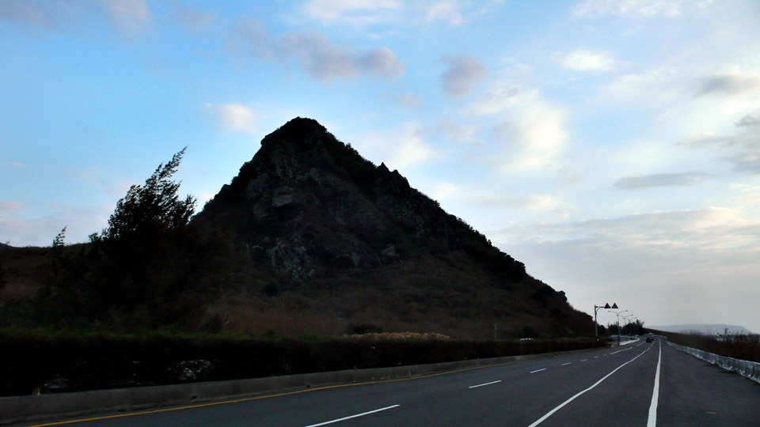
再給點時間呀～我連距離墾丁還有幾公里都搞不清楚，能不能晚一點才天黑。
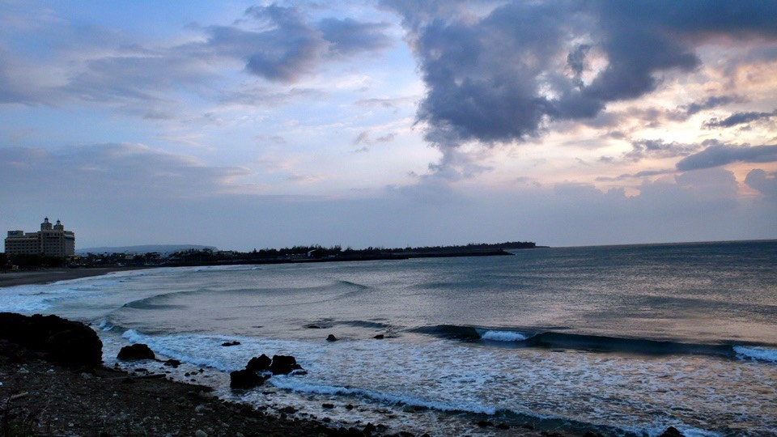
海岸邊開始出現比較大型的旅館建築，大概表示離墾丁越來越近了。
除了大型的旅館，這一路上的房子幾乎全部都掛著民宿的招牌，來墾丁玩絕對不會找不到住的地方，從三百元到幾千元的一應俱全。
歐耶！墾丁國家公園到了！
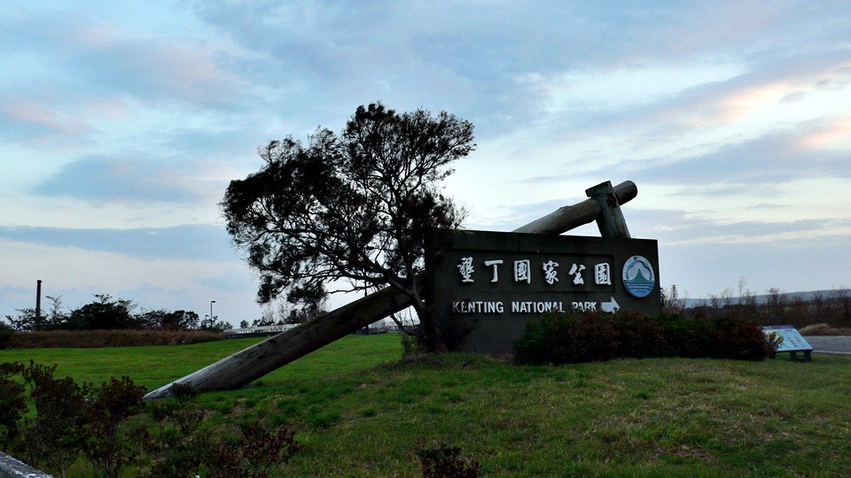
雖然很開心，但現在連恆春市區都還沒騎到，不應該這麼遠的，都是逆風搞的鬼，不然老早就騎到了說。
終於，天色暗了起來，此時也發現往鵝鸞鼻剩下最後的十五公里，小小感到欣慰，再怎麼說也快要騎到了，就算要摸黑也不會太遠啦。

從天色變暗到天黑幾乎是一瞬間的事，亮著燈光的海岸看起來好美，漆黑的海面則透露著神秘的氣息，有種深不可測的感覺。
交替著騎在黑漆漆沒有路燈的陰暗道路，以及燈火通明店家一大堆的熱鬧市區，先經過恆春市區。
然後就是久違的墾丁啦～去年夏天有來玩過，那時候是旺季又是假日，人真是多到爆炸，今天就顯得有點冷清。
只有為數不多的遊客，之前這條路是完全塞到不能走的，車子全部被卡死，馬路上的人多的要走在車道上才能移動。
這邊每一個攤販跟店家都是黃金攤位，夏天的時候肯定忙的很充實。
現在雖然已經十月中了，可是氣溫一樣居高不下，白天可以超過三十五度是稀鬆平常，入夜之後最冷也還有個二十五度左右。
白天的時候一定是很熱鬧的沙灘，現在一個人也沒有，沙灘上印著淡淡的影子，大飯店的燈火處就是墾丁最熱鬧的地方。
那我今天要睡哪裡呢？
這邊應該算是很童叟無欺的地方，房價都直接標示在旅館門口，十月份的平常日，雙人房只要八百元，以墾丁鬧區來說真是便宜到不可思議。
夏天來不要個兩三千元根本住不起，而且還不見得有房間，現在只剩下大約三折的房價，但還是攬不到客人。
騎著車從鬧區走過，不停的會有旅館的業者騎著機車追著問要不要住宿？很便宜喔？
講的我都有點心動，但是今天目標是鵝鸞鼻燈塔，怎麼可以就這樣住在墾丁，而且這次環島是沒有住宿費的，絕對不能破功呀。
摸黑用手電筒照明，八點左右終於騎到燈塔的停車場，拉下鐵門歇業的寺廟旁邊有洗手台，在這裡簡單的擦過澡，同時也洗了汗濕的衣服。
本來以為天黑之後，燈塔區就不開放給遊客進去，所以今天打算睡在寺廟外頭，等洗過澡去處去閒逛，才發現入口並沒有封閉。
相反的，白天進去的時候要買票花錢，晚上來則變成免費，大門開開的讓遊客自由進出。
很有賺到的感覺，今天可以更靠近燈塔，而不是睡在外面的寺廟。
穿著拖鞋牽著車，襪子就掛在車子上，牽著牽著都沒注意襪子已經掉了，發現的時候已經是隔天早上，要找襪子也不知從何找起。
穿過入口之後就可以看見在夜空下發出強光照明的燈塔，定速旋轉著發光，指引著海面作業的船隻。
每次來墾丁我都會到燈塔區走一走，雖然已經越來越少人會到這邊來。
之所以很喜歡鵝鸞鼻燈塔，是因為我這輩子第一顆看到的流星，就是在燈塔下躺著看星空的時候發現的。
所以鵝鸞鼻燈塔對我的意義從此就不再一樣。
想離燈塔更近一點，可以的話希望能睡在燈塔的正下方，但是燈塔位於圍牆內，而入夜之後已經關閉。
望著鐵門興嘆，此時距離燈塔只有短短的五十公尺。
既然不能睡燈塔下，那就另外找個地方過夜吧，白天的時候看這天色，晚上大概會飄雨吧，
海邊的天氣變化多端，還是找個有屋頂的地方比較保險。
講是這樣講，偏偏這邊都很空曠，剛剛洗澡的那個廟是有屋頂又最適合過夜的地點了。
正想著要不要掉頭走回去，就看到這一個牌子。
經過了兩次都沒看見，因為天色實在太暗了，用閃光燈拍固然很清楚，但是當時這個牌子樹立在黑暗中，說是隱形的也不為過。
是最南點呢，而且距離才短短的八百公尺，雖然不知道那邊有沒有可以過夜的地方，但是先去看看再說。
在通往最南點的路上都是陡峭的下坡路，外加沒有任何路燈照明，黑的伸手不見五指，還不時傳來狗吠聲。
順著路走卻沒通到最南點，大概指示牌又隱藏在黑暗之中被忽略了，意外的反而到了一個很大間的廁所。
有水、有電而且也有屋頂，加上它雖然是廁所可是卻一點也不臭，今天就睡在廁所的外部走廊。
穿了一天的衣服掛在車上吹風，這邊有屋頂但是沒有牆壁，強烈的風勢刮個不停。
躺在睡袋中的我好像整個人都要被吹的團團轉。
這幾天露營睡地上的時候，都是用一包抽取式衛生紙當作枕頭，但是隨著衛生紙的消耗，這個替代用的枕頭也變得越來越薄。
已經不再是一個稱職的枕頭，拿來墊著還是會靠到硬梆梆的地面，可是一時又找不到枕頭的替代品。
難不成要用筆記型電腦來當枕頭嗎？
最後靈機一動，選擇用球鞋墊在頭下面，發現意外的舒適，比起用衛生紙還要舒適，整個晚上睡的超級好的。
睡地上睡久了也能習慣，從前幾天翻來覆去不成眠，到今天一閉上眼幾乎就直接進入夢鄉。
夜裡聽著呼嘯的風聲、嘩啦的海浪聲，知道自己位於台灣的最南端，除了純粹的地理意義之外，不知道為什麼還覺得很爽。
彷彿征服了一般人不會到的地點似的，這裡是海和風的家鄉、國境之南、漂泊浪者的棲身之處。
繼續閱讀：10.18 東北特產